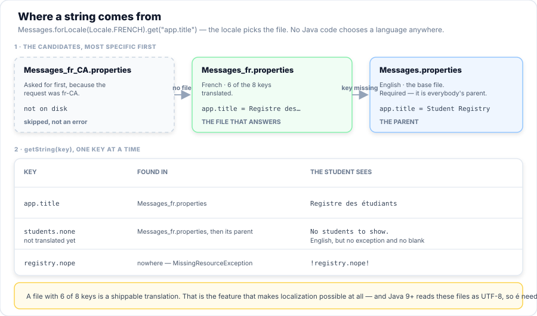

Session 9 — Design Patterns & Advanced Features
Your registry works. Every program you have written so far has been judged on whether it runs, and they all do. Today the question changes: can the next person change it? You will take the registry apart and give each decision a home — the store behind an interface, the choice of store behind a factory, the fee rule behind a policy, the notification behind a listener. Then you widen out to the rest of the language you will need on the job: one program in two languages, I/O and NIO, the file system API, and the advanced features that make modern Java shorter. Same registry, restructured — and nothing on this page is a toy.
- Explain what a design pattern is — a name for a solution, not code you copy — and say what a pattern costs as well as what it buys.
- Extract an interface from a class that talks to a database, and move every
java.sqlimport behind it. - Write a factory that returns one of several implementations, and justify a
switchexpression with nodefault. - Defend or reject a singleton in a given case, and name the cost it imposes on testing.
- Replace an
if/elsechain with a strategy chosen at the call site. - Attach a listener to a subject that has never heard of it, and explain why the subject stays closed for modification.
- Separate model, view and controller, and say which of the three may import
java.sql. - Localise a program with
ResourceBundle, and trace which file answers a lookup when the exact locale has none. - Format numbers, currency and dates per locale with
MessageFormatandNumberFormat. - Choose between
java.io,java.nioandjava.nio.filefor a given job, and usePath,Files,walkand a globPathMatcherto move data in and out of the registry. - Use records, text blocks, switch expressions, functional interfaces and
Optionalin code you write; recognisevar, sealed types and pattern matching on sight; and say when not to.
Your Roadmap for Today
Why This Matters
Everything you have built so far was judged by one question: does it work? That was the right question, and you answered it. But it is not the question your employer will ask. The registry you wrote in Session 7 will be asked to move to MySQL, to charge a new fee, to show a French screen, and to export a file — not by you, and not next month. The question then is how many places have to change, and the honest answer for code written to work the first time is all of them.
A design pattern is not a library and not a template. It is a name for a shape that keeps working after the requirements move, and it is shared vocabulary: "put a factory in front of it" tells another developer more in five words than a paragraph of explanation. Today you learn the six shapes the registry actually needs, applied to code you already own — and then the three areas of the language that a working Java developer meets in their first month on a real codebase: speaking more than one language, moving data on and off disk, and the modern language features that turn twenty lines into four.
Part 1 of 11 Why Patterns Exist
The fastest way to understand a pattern is to watch a program that needs one and does not have it. The program below is not a straw man and not badly written. It is the shape most working code actually has, and it is the shape you probably handed in for A4.
static final class HardWiredDesk {
/** Course 1 costs this much. Ask anyone. */
private static final BigDecimal COURSE_ONE_FEE = new BigDecimal("450.00");
private String lastEmail = "(none)";
/**
* Enrols a student: works out the fee, inserts the row, and writes the message — all
* here, because that was the quickest way to make it work.
*/
DeskReceipt enrol(String name, String email, int courseId, LocalDate date) throws SQLException {
// decision 1 and 2: the fee, and when the discount applies.
BigDecimal fee = COURSE_ONE_FEE;
if (!date.isAfter(LocalDate.of(2026, 8, 31))) {
fee = fee.multiply(new BigDecimal("0.90")).setScale(2, RoundingMode.HALF_UP);
}
// decision 3: how a student is stored.
try (Connection c = Db.open();
PreparedStatement ps = c.prepareStatement(
"INSERT INTO students (name, email, course_id, active) VALUES (?, ?, ?, TRUE)",
Statement.RETURN_GENERATED_KEYS)) {
ps.setString(1, name);
ps.setString(2, email);
ps.setInt(3, courseId);
ps.executeUpdate();
}
// decision 4: what the student is told, in one language.
lastEmail = "Welcome to the Student Registry, " + name + ". Your fee is " + fee + ".";
return new DeskReceipt(name, courseId, fee.toPlainString());
}
Read enrol and count the decisions inside it. There are four, and not one of them is
named:
- how much the fee is —
COURSE_ONE_FEE, hard-wired to course 1; - whether the discount applies — an
ifwith a date buried in it; - how a student is stored — a
PreparedStatement, right there; - what the student is told — a
Stringconcatenated in one language.
Four decisions, four reasons to come back and edit this method. And it runs perfectly:
Nothing in it is a bug. That is the whole problem, and it is worth sitting with for a moment: nothing here is wrong enough to make you fix it. So it stays, and it is still here when the third request arrives.
What a pattern is not
Three misreadings cost more time than ignorance does, so name them now:
- It is not code you copy. There is no
Factory.javain the JDK. A factory is a shape — a method that returns one of several types — and yours will not look like anyone else's. - It is not free. Every pattern on this page adds a type. Six patterns can turn a two-class program into a twelve-class one, and that is a real cost paid in files to open and indirection to follow. A pattern you cannot justify in one sentence is a pattern to delete.
- It is not a substitute for understanding the problem. Patterns are named after the fact, by people who noticed the same solution recurring. Applying one before you have felt the problem is how you get an interface with one implementation and a factory that returns it.
The six we use, and the rest of the catalogue
The Gang of Four book (Design Patterns, 1994) describes about two dozen patterns. Teaching all of them in a two-hour session produces recognition, not ability. So this session teaches the six the registry actually needs — each one motivated by code you already wrote — and tabulates the rest below, so the vocabulary is complete when you meet it in a code review or an interview.
| Pattern | Absorbs the change | Part |
|---|---|---|
| Repository | "we are moving off this database" — or "test it without one" | 2 |
| Factory | "which implementation should we start with?" | 3 |
| Singleton | "this value is needed almost everywhere" | 4 |
| Strategy | "the rule changed again" | 5 |
| Observer | "when that happens, also do this — and this — and this" | 6 |
| MVC | "now show it on a screen instead of a console" | 7 |
The rest, grouped the way the book groups them. You are not expected to implement these today; you are expected to recognise the name and know roughly what it buys.
| Group | Pattern | One line | Where you meet it |
|---|---|---|---|
| Creational how objects get made |
Factory Method | Subclasses decide which class to instantiate | Today, Part 3 |
| Abstract Factory | A family of related objects, made together | JDBC's Connection → Statement | |
| Builder | Assemble a complex object step by step | StringBuilder, HttpRequest.newBuilder() | |
| Singleton | Exactly one instance, reachable globally | Today, Part 4 | |
| Prototype | Copy an existing object instead of building one | Object.clone(), copy constructors | |
| Structural how objects fit together |
Adapter | Make one interface look like another | Arrays.asList(), InputStreamReader |
| Bridge | Split an abstraction from its implementation | JDBC itself — the driver is the bridge | |
| Composite | Treat one and many the same way | A Node tree, a folder of folders | |
| Decorator | Add behaviour by wrapping, not editing | BufferedReader around a Reader | |
| Facade | One simple front for a complicated subsystem | Today's Db | |
| Flyweight | Share the parts that repeat | Integer.valueOf()'s cache | |
| Proxy | A stand-in that controls access | Connection pools, lazy loading | |
| Behavioural how objects talk |
Chain of Responsibility | Pass a request along until somebody handles it | Servlet filters, logging levels |
| Command | Wrap a request as an object | Undo stacks, thread pools | |
| Iterator | Walk a collection without exposing it | for (Student s : list) | |
| Mediator | Objects talk through one hub, not each other | A controller, a message bus | |
| Memento | Capture and restore state | Undo, Savepoint in Session 8 | |
| Observer | Notify many when one changes | Today, Part 6 | |
| State | Behaviour changes with internal state | A TCP connection, an order's lifecycle | |
| Strategy | Swap an algorithm at run time | Today, Part 5 | |
| Template Method | Fixed steps, one step left to subclasses | AbstractList, Db.Work | |
| Visitor | Add operations without touching the classes | Compilers, XML/HTML traversal |
Db is a facade, for-each is an iterator,
BufferedReader is a decorator, Savepoint is a memento, JDBC's driver is
a bridge, and Db.Work from Session 8 is a template method. Patterns are not a new
world to learn — they are the names of the world you are already standing in.
Part 2 of 11 The Repository
The first request in E01's list was "we are moving to MySQL". Look at what
that costs in the hard-wired version: every method that says jdbc has to be found and
edited, and there is no list of them, because nothing names the idea of "the place students are
kept". The fix is to name it:
package com.aptech.s09.repository;
import com.aptech.s09.model.Student;
import java.util.List;
import java.util.Optional;
/**
* Everything the registry needs from "a place that keeps students" — and nothing about how
* any particular place does it.
*
* <p>Read the import list above: there is no {@code java.sql} in it. That is deliberate, and
* it is the entire point of this interface. A caller holding a {@code StudentRepository} cannot
* write SQL even if it wants to, because SQL is not part of the type.
*
* <p>Look at what is <em>not</em> declared either: no method throws {@code SQLException}.
* If it did, every caller would have to handle a database failure even when the store is a
* list in memory, and {@link InMemoryStudentRepository} would be forced to invent one. The
* implementations that <em>can</em> fail wrap the failure in {@link RepositoryException},
* which is unchecked — so it travels without being declared, and still stops the program.
*/
public interface StudentRepository {
/** The student with this id, or an empty Optional — never null. */
Optional<Student> findById(int id);
/** Every student, in id order. */
List<Student> findAll();
/** The students on one course, in id order. */
List<Student> findByCourse(int courseId);
/** A case-insensitive search on the name. An empty fragment matches everyone. */
List<Student> findByNameContaining(String fragment);
/**
* Inserts when the student's id is 0, updates when it is not. The returned student is
* the stored one — for an insert that means the id the store chose.
*/
Student save(Student student);
/** True when a row was actually removed. */
boolean deleteById(int id);
int count();
/**
* The name printed by the examples, so the output says which store answered. A real
* project would put this in a log line instead.
*/
String storeName();
}
That file is worth reading twice, because of what it does not contain. There is no
import java.sql. There is no throws SQLException. There is no
Connection, no ResultSet, no URL, no password. A method that takes a
StudentRepository and calls findAll() cannot tell — and cannot
care — whether that data came from a database, a list, or a file.
This shape has a name: the Repository pattern. It is the one that earns its keep first, and it is the one that makes Session 10 possible, because a store that is only a list can be created and thrown away inside a test with no database anywhere in sight.
One method, two stores
The claim is not "interfaces are nice". The claim is that the same code runs against both, and it either does or it does not. So here is the code, written once, against the interface — and it is nine lines long:
/**
* One method, written once, against the interface.
*
* <p>There is no {@code if (repo instanceof H2StudentRepository)} in here, and no way to
* write one that would be worth reading. That is the test of whether an abstraction is
* real: the code above it gets simpler, rather than gaining a branch.
*/
private static void report(String label, StudentRepository repo) {
System.out.println(" " + label + " (" + repo.storeName() + ")");
for (Student s : repo.findByCourse(1)) {
System.out.println(" " + ConsoleView.row(s));
}
System.out.println(" name contains 'a' -> "
+ repo.findByNameContaining("a").size() + " match(es)");
}
Notice what is missing from it. There is no if (repo instanceof H2StudentRepository),
and no way to write one that would be worth reading. That is the test of whether an abstraction is
real: the code above it gets simpler, rather than gaining a branch. Now run the
program and watch both columns answer identically:
H2StudentRepository goes back to the
database and still finds eight students; a new InMemoryStudentRepository finds none,
because the list died with the last object. That is not a flaw to apologise for. A store that lasts
exactly as long as one test is precisely what a test needs.
Where the SQL went
The interface did not delete the SQL; it collected it. Everything Session 7 and 8 taught
— prepared statements, transactions, reading by column label, wasNull() —
still happens, and it now happens in exactly one file per store:
public final class H2StudentRepository implements StudentRepository {
/** Written once, so the SELECT list and the reader below cannot drift apart. */
private static final String COLUMNS = "id, name, email, course_id, mark, active";
@Override
public Optional<Student> findById(int id) {
String sql = "SELECT " + COLUMNS + " FROM students WHERE id = ?";
try (Connection c = Db.open(); PreparedStatement ps = c.prepareStatement(sql)) {
ps.setInt(1, id);
try (ResultSet rs = ps.executeQuery()) {
return rs.next() ? Optional.of(read(rs)) : Optional.empty();
}
} catch (SQLException e) {
throw new RepositoryException("findById(" + id + ") failed: " + Db.firstLine(e), e);
}
}
@Override
public List<Student> findAll() {
return query("SELECT " + COLUMNS + " FROM students ORDER BY id");
}
@Override
public List<Student> findByCourse(int courseId) {
return query("SELECT " + COLUMNS + " FROM students WHERE course_id = ? ORDER BY id", courseId);
}
@Override
public List<Student> findByNameContaining(String fragment) {
return query("SELECT " + COLUMNS + " FROM students WHERE LOWER(name) LIKE ? ORDER BY id",
"%" + fragment.toLowerCase(Locale.ROOT) + "%");
}A repository is worthless the moment it hands out a Connection, a ResultSet,
or a SQLException. Each one drags the database back across the seam, and the caller is
right back to knowing which store it has:
// WRONG - the seam is gone, and nothing warns you
public interface StudentRepository {
List<Student> findAll() throws SQLException; // the caller now handles SQL
Connection raw(); // and can now write its own SQL
}The checked exception is the subtle one. Declaring it forces every caller to try/catch
a database failure that the in-memory store cannot produce — so in Session 10 your test has to
catch an exception that can never be thrown. Catch it in the store, wrap it in an
unchecked exception, and re-throw. That is what RepositoryException in this
project is for, and it is four lines long.
Part 3 of 11 The Factory
![Three panels. The caller — RegistryController and EnrolmentService — calls repository.findAll() and names no class. The seam is the StudentRepository interface, with four representative method signatures and the note that it imports no java.sql and throws no checked SQLException. Below it, three implementations — InMemoryStudentRepository, H2StudentRepository and CsvStudentRepository — each say implements. The third panel shows who chooses: RepositoryFactory.create(Store), a switch expression with no default, driven by the setting -Dregistry.store=memory read once by AppConfig.get().](../assets/img/diagrams/s09_repository_factory.svg)
Figure 1 — the whole shape of the session: three callers that name no class, one interface, three stores, and a single factory that decides.
The repository interface answered "the store is behind an interface". It did not answer
the question that follows immediately: who decides which implementation to build?
In E02 the answer was "the main method, by hand". That is fine for a demonstration and
wrong for a program, because it puts the name H2StudentRepository in a class that has
no business knowing it exists.
The Factory pattern is one method whose whole job is to answer that question, in one place:
public final class RepositoryFactory {
/** The stores this project can build. Add one, and the switch below stops compiling. */
public enum Store {
MEMORY,
H2
}
private RepositoryFactory() {
}
/** The whole factory: one switch, one new, and the caller never sees either. */
public static StudentRepository create(Store store) {
return switch (store) {
case MEMORY -> new InMemoryStudentRepository();
case H2 -> new H2StudentRepository();
};
}
/** The same, from a name such as {@code "h2"} — the form a config file would use. */
public static StudentRepository create(String name) {
return create(parse(name));
}
/** Whatever {@code AppConfig} says. This is the call the rest of the program makes. */
public static StudentRepository createDefault() {
return create(AppConfig.get().studentStore());
}
Read the switch twice, because the detail matters more than the pattern:
there is no default branch. That is not a style preference. With
every Store constant listed explicitly, adding a third one turns this method into a
compile error until somebody decides what it means:
// A default branch is the bug you cannot test
return switch (store) {
case MEMORY -> new InMemoryStudentRepository();
case H2 -> new H2StudentRepository();
default -> new H2StudentRepository(); // CSV store? silently gets H2.
}; // Nothing throws. Nothing fails. Wrong data.default branch converts "somebody must decide what the new store means"
from a compile error into a silent wrong answer. Where a switch enumerates a closed set — an
enum, a sealed type — leave the default out and let the new case break the
build. The compiler is the only reviewer guaranteed to look at every call site.
The other habit worth copying is in the failure path. Ask for a store that does not exist and the message tells you what does — and that list is built from the enum, not typed out, so it cannot go stale:
/** Turns {@code "h2"} into {@link Store#H2}, or explains what was expected. */
public static Store parse(String name) {
if (name == null || name.isBlank()) {
throw new IllegalArgumentException("store name is blank - " + help());
}
try {
return Store.valueOf(name.trim().toUpperCase(Locale.ROOT));
} catch (IllegalArgumentException e) {
throw new IllegalArgumentException("unknown store '" + name + "' - " + help());
}
}
/** The list of valid names, built from the enum so it cannot go stale. */
public static String help() {
return "known stores: " + Arrays.stream(Store.values())
.map(s -> s.name().toLowerCase(Locale.ROOT))
.collect(Collectors.joining(", "));
}The test for whether you need a factory
Not "does the code create objects?" — all code creates objects. The useful question is:
RepositoryFactory existed, that number was every class that enrolled a
student. After it, the number is one file. When the answer is already one, you do not
need a factory — you need to keep it at one. A factory for a class with a single
implementation and no prospect of a second is a file that exists to satisfy a book.
Part 4 of 11 The Singleton
The registry has three settings — which store, which language, which folder to export to — and they arrive as JVM properties. Almost every class needs to read them, and none of them should be reading the same three properties for itself. That is the situation the Singleton pattern is for: one instance, one read, reachable from anywhere.
package com.aptech.s09.config;
import com.aptech.s09.repository.RepositoryFactory;
import java.nio.file.Path;
import java.util.Locale;
/**
* The program's settings, in exactly one object.
*
* <p>This is the Singleton pattern: a class that guarantees it has one instance and hands
* that instance to anyone who asks. Three things make it one —
* <ol>
* <li>a {@code private} constructor, so nobody outside can call {@code new};</li>
* <li>a {@code static final} field holding the one instance;</li>
* <li>a {@code static} accessor, {@link #get()}, that returns it.</li>
* </ol>
*
* <p><strong>Read Part 4 before you copy this.</strong> A singleton is a claim — "there is
* one of these in this program, forever" — and it is a claim you have to be able to defend.
* Here it is defensible: these values are read once from system properties at startup and
* never change. In a class that holds a connection, or anything a test would want two of, the
* same pattern becomes a problem.
*
* <p>The values come from system properties with a default, so the same compiled program can
* run in two configurations without a rebuild:
* <pre>
* java -Dregistry.store=h2 -Dregistry.locale=fr com.aptech.s09.E04_Singleton
* </pre>
*/
public final class AppConfig {
/**
* The one instance. It is built when this class is first touched, which is why the
* constructor below must not call anything that touches {@code AppConfig} back.
*/
private static final AppConfig INSTANCE = new AppConfig();
private final RepositoryFactory.Store studentStore;
private final Locale locale;
private final Path exportDir;
private AppConfig() {
this.studentStore = RepositoryFactory.parse(System.getProperty("registry.store", "memory"));
this.locale = Locale.forLanguageTag(System.getProperty("registry.locale", "en"));
this.exportDir = Path.of(System.getProperty("registry.exportDir", "sandbox"));
}
/** Hand out the one instance. Note there is no {@code new AppConfig()} anywhere else. */
public static AppConfig get() {
return INSTANCE;
}
public RepositoryFactory.Store studentStore() {
return studentStore;
}
public Locale locale() {
return locale;
}
public Path exportDir() {
return exportDir;
}
@Override
public String toString() {
return "AppConfig[store=" + studentStore
+ ", locale=" + locale.toLanguageTag()
+ ", exportDir=" + exportDir + "]";
}
}
The proof is two calls and a ==, and the reason it is worth anything is the second
section of the output: two different parts of the program read the same decision, so they
cannot disagree about it.
Now the part most lessons leave out. That output ends with a section titled "What this costs", and it is not decoration:
- A test cannot hand it different values. The fields are read once, in the constructor, the first time the class is touched. A test that wants a different store has to set a system property before that moment — ordering you cannot see from inside the test, and a failure that depends on which test ran first. That is the worst kind of flaky.
- There can never be two. Not even for one test that wants to compare "before" with "after". The pattern's whole promise is the thing that makes it untestable.
- The constructor is private, so nothing can wrap it, decorate it, or take it as a parameter where an interface was expected.
That is not a joke at the pattern's expense; it is the accurate description. Reachable from anywhere means changed from anywhere, and a value nobody passes as a parameter is a value no reader can see the origin of. Use one when all three of these hold:
- the values are genuinely read-only for the life of the process;
- they are needed in most classes, so passing them is noise;
- nothing will ever want two of them, including a test.
Anything a test would want to replace with a stand-in — a connection, a repository, a fee
policy — fails the third test and must be passed in, not looked up. Notice that this project
does exactly that: AppConfig is a singleton, and the repository is not. It
comes from RepositoryFactory.create(store), which takes the choice as an argument.
The payoff of reading the properties is that the same compiled program can be a different program without being rebuilt:
java -Dregistry.store=h2 -Dregistry.locale=fr com.aptech.s09.E04_Singleton
No class is told, and nothing is recompiled. AppConfig's constructor reads those
properties, and every other class in the program asks AppConfig.get().
Part 5 of 11 The Strategy
This one is the fee rule from E01 — the if buried inside
enrol, hard-wired to course 1's price and one discount date. Its second request was
"instalment payers pay 5% more", and in the hard-wired version that is a second
if, and a third the month after. Each one adds a branch to a method that already does
four things.
The Strategy pattern names the decision instead of branching on it. The rule becomes an object, and the caller holds the interface:
package com.aptech.s09.policy;
import java.math.BigDecimal;
/**
* How much this enrolment costs. One method — which is what makes it a Strategy, and also
* what makes it a {@link FunctionalInterface}: a policy with simple arithmetic can be written
* as a lambda instead of a class.
*
* <p>The point of the pattern is the <em>caller</em>. Look at
* {@code EnrolmentService.enrol()}: it calls {@code policy.feeFor(request)} and has no idea
* whether that is a flat fee, a discount, or a payment plan. Adding a fourth policy next term
* changes no caller, no test, and no line of the service.
*
* <p>{@link #name()} is a {@code default} method, so a lambda gets a value without writing
* one. The value it gets is deliberately unhelpful: if a policy's name appears in a receipt or
* a log, it deserves a real name, and that means a class.
*/
@FunctionalInterface
public interface FeePolicy {
/** What this enrolment costs, in the currency the course fee is in. */
BigDecimal feeFor(EnrolmentRequest request);
/** A label for receipts and logs. A lambda inherits the default below. */
default String name() {
return "custom policy (unnamed)";
}
}
That is the whole pattern: one method, one interface, and three classes that implement it. The
call site — the part that would have grown an if — is a loop:
System.out.println(Db.rule("Three rules, one method, two dates"));
System.out.printf(" %-41s %10s %10s%n", "policy", early, late);
System.out.println(" " + "-".repeat(63));
for (FeePolicy policy : policies) {
BigDecimal onTime = policy.feeFor(EnrolmentRequest.of(ada, java, early));
BigDecimal tooLate = policy.feeFor(EnrolmentRequest.of(ada, java, late));
System.out.printf(" %-41s %10s %10s%n", policy.name(), onTime, tooLate);
}
System.out.println();
System.out.println(" Every row came from the same line of code: policy.feeFor(request).");
System.out.println(" The only thing that changed between rows was which object it was.");
Three policies, two dates, six answers — and one line of code produces all of
them: policy.feeFor(request). The only thing that changed between the rows
was which object it was called on:
if (policy instanceof EarlyBird) somewhere else has not removed anything — it
has relocated the problem and hidden it.
A policy with no class at all
FeePolicy has exactly one abstract method, which makes it a
functional interface — and that means a lambda is a legal implementation.
For arithmetic you may never need a file:
System.out.println(Db.rule("A policy with no class at all"));
FeePolicy scholarship = request -> Money.percent(request.course().fee(), "0.50");
System.out.println(" scholarship 50% on " + engineering.title() + " : "
+ scholarship.feeFor(EnrolmentRequest.of(ada, engineering, early)));
System.out.println(" its name() : " + scholarship.name());
System.out.println();
System.out.println(" A lambda is enough for arithmetic, and inherits the default name.");
System.out.println(" The moment a policy's name goes on a receipt, give it a class of its own.");
Both are correct. The choice is not about style, it is about whether the rule needs a
name a person will read. A scholarship calculation that appears on a receipt needs
name() to say "scholarship (50%)", and the default
"custom policy (unnamed)" on a receipt is a bug report waiting to happen. So: lambda for
arithmetic the program does quietly, class for anything printed.
Money is not a double
One more thing is hiding in that output, and it is the most expensive lesson in the session. Scroll
back to its last section — "Money is not a double" — where the same fee is
priced twice, once with a double and once with BigDecimal:
double for money, ever
A double is a binary fraction, and 0.9 is not one. 450.00 * 0.9 comes
back as 405.00000000000006, and the error does not cancel itself out over a ledger
— it accumulates. Nine thousand students later you have a rounding discrepancy and no line
of code that looks wrong.
Use BigDecimal with an explicit scale and rounding mode
(setScale(2, RoundingMode.HALF_UP)), which is what Money in this project
is for. And note the second half of the rule: a BigDecimal is
immutable — fee.multiply(x) returns a new value and leaves
fee alone, so fee.multiply(x); on its own line does nothing at all.
Part 6 of 11 The Observer
Every pattern so far has moved a decision to one place. This one does something different: it answers the request that arrives about a month after a system goes live — "when a student enrols, can we also email them? And write an audit line? And ping the finance system?"
The obvious way to do that is to add three lines to enrol. Then the finance system's
owner changes their mind, and enrol changes again. Then somebody wants the SMS only
for instalment payers, and now the enrolment code knows about SMS and about instalments, and the
method that was about enrolling a student is about four other things.
The Observer pattern replaces "call these three" with "tell whoever is interested". The whole mechanism is a one-method interface:
package com.aptech.s09.events;
/**
* Something that wants to know when a student enrols.
*
* <p>One method, so it is a {@link FunctionalInterface} and a listener can be a lambda:
* <pre>
* registry.addListener(event -> System.out.println("sms to " + event.student().name()));
* </pre>
*
* <p>The direction of the dependency is the whole trick. The registry does not import the
* audit log or the email sender — it imports <em>this</em>. New listener, no edit to the
* registry: that is the Open/Closed principle, demonstrated rather than asserted.
*/
@FunctionalInterface
public interface EnrolmentListener {
/** Called once per enrolment. Keep it short: the caller is waiting. */
void onEnrolment(EnrolmentEvent event);
/** A label for the examples' output. A lambda inherits this default. */
default String name() {
return "listener";
}
}
The direction of the dependency is the trick, and it is worth stating plainly: the registry does
not import AuditLog or EmailStub. It imports this.
So a new listener is a new class, and the registry is not edited at all — which is the
Open/Closed principle demonstrated rather than asserted. Here is the sequence, including the
one-line third listener that was written inside the example file and still needed no change
anywhere else:
AuditLog audit = new AuditLog();
EmailStub email = new EmailStub();
EnrolmentListener sms = event ->
System.out.println(" [sms] " + event.student().name() + ": your fee is "
+ event.fee() + " (" + event.policyName() + ")");
System.out.println(Db.rule("Now two listeners, neither known to the registry"));
registry.addListener(audit);
registry.addListener(email);
System.out.println(" attached : " + registry.listeners().stream()
.map(EnrolmentListener::name).toList());if (listeners.isEmpty()) anywhere in
EnrolmentService — and no if (listener instanceof ...) either.
That absence is what the pattern buys.
- A listener that throws kills the enrolment. In this project the listener is called directly, so an exception in the email stub rolls back a successful save. The fix is a design decision, not a line of code: either the notification is part of the transaction (and should fail it), or it is best-effort and must be wrapped. Decide deliberately, and write it down.
- The listener knows too much.
AuditLogtakes anEnrolmentEventand nothing else — no repository, no service. If a listener needs more, the event is missing a field. A listener holding a repository is a listener that can change the thing that notified it. - Nobody detaches. A long-lived subject holding listeners that hold a window
is a memory leak, and it is the reason
removeListenerexists here andAutoCloseableexists in real event buses.
Part 7 of 11 MVC
Model–View–Controller is not three folders and it is not a framework. It is one rule about who is allowed to decide what:
| Layer | Decides | May import | Must never |
|---|---|---|---|
| Model Student, Course, the repository |
What is true — the data and the rules about it | java.sql (in the H2 store only), java.math |
Print anything, or know a view exists |
| View ConsoleView, later a JavaFX window |
How it looks — layout, wording, formatting | Nothing but the model types it is handed | Talk to a database, or decide anything |
| Controller RegistryController |
What happens next — the order of operations | The service, the view interface, the model | Contain a fee rule, SQL, or a System.out |
The test of whether the separation is real is not a diagram — it is whether you can
swap the view and change nothing else. So E07 does exactly that,
half way through:
System.out.println(Db.rule("4. same model, same controller, a different view"));
controller.setView(new SummaryView());
controller.listStudents();
controller.enrol("Lena Fischer", "lena@example.com", 2, LocalDate.of(2026, 9, 15), 1);The new view is written inside the example file, and it is the whole of the change:
/**
* A view that shows totals instead of rows. It is written here, inside the example, to
* keep the file count down — in a real project it would live in the view package with
* {@code ConsoleView}.
*/
static final class SummaryView implements RegistryView {
@Override
public void showStudents(List<Student> students) {
long active = students.stream().filter(Student::active).count();
System.out.println(" [summary] " + students.size() + " students, " + active + " active");
}
@Override
public void showReceipt(EnrolmentReceipt receipt) {
System.out.println(" [summary] receipt: " + receipt.student().name()
+ " owes " + receipt.fee()
+ (receipt.isSplit() ? " in " + receipt.instalments() + " parts" : ""));
}
@Override
public void showMessage(String message) {
System.out.println(" [summary] " + message);
}
@Override
public String name() {
return "summary view";
}
}Part 8 of 11 Internationalization & Localization
E01's third request was "show the screen in French", and its cost was
"every string literal in the program" — because in that program the text is
produced, not looked up, so there is nothing you could hand a translator. This part
fixes that, and the fix is smaller than you expect: the Java code barely changes at all.
Two words that are not the same word
- Internationalization (i18n)
- The engineering job: get every user-visible string out of the code and into a file, so that adding a language is not a code change. The "18" counts the letters between the i and the n.
- Localization (l10n)
- The translation job: produce those files for a particular place. It is done by somebody who speaks the language, and it needs no Java at all.
- Locale
- A language plus a place.
Locale.FRENCHis the language;Locale.CANADA_FRENCHis French as written in Canada, which differs in currency and date format. A locale is not a language, and treating the two as the same thing is the first bug in every localisation project.
Notice the split: you do the i18n once, and other people do the l10n forever after. The whole design goal is that adding a language is adding a file, never editing a class.
The mechanism, in one call
All of it rests on a single method you have not met yet:
ResourceBundle.getBundle("Messages", locale). The base name has no path and no
extension — the JVM turns it into a file name and looks on the classpath. Everything else
follows from how it chooses which file:

Figure 2 — one lookup, three possible files, and the answer comes from wherever the key was actually found.
That is the part students get wrong by assumption, so be precise about it.
getBundle is not searching for one file. It builds a list of candidate
locales, most specific first, and takes the first one that exists:
| Asked for | Tries, in order | Which file answers |
|---|---|---|
fr_CA | Messages_fr_CA, Messages_fr, Messages | Messages_fr.properties — there is no _CA file |
fr | Messages_fr, Messages | Messages_fr.properties |
de | Messages_de, Messages | Messages.properties — German was never translated |
Locale.ROOT | Messages | Messages.properties |
And there is a second fallback inside the file that answered. Once
Messages_fr.properties is chosen, a key it does not define is looked up in its
parent — Messages.properties. That is why a half-finished
translation is usable rather than broken:
# ============================================================================
# French.
#
# Read by the same ResourceBundle.getBundle("Messages", Locale.FRENCH) call as
# the English file - the locale picks the file, the code does not.
#
# Two keys are DELIBERATELY missing: students.none and menu.quit. Example 8
# asks for them in French and gets English, because a bundle inherits from its
# parent. That inheritance is the feature: a language can ship at 80%
# translated and still be usable.
#
# Java 9+ reads .properties files as UTF-8, so the accents below need no
# é escapes. The file itself must be saved as UTF-8 (this one is).
# ============================================================================
app.title = Registre des étudiants
app.subtitle = Aptech - Construire des applications Java complètes
students.count = {0} étudiants enregistrés
enrolment.done = Inscription de {0} le {1,date,long} - frais totaux {2,number,currency}
enrolment.instalments = Payable en {0} versements de {1,number,currency}
menu.help = Tapez ''aide'' pour les options
Two keys are missing on purpose: students.none and menu.quit. Ask for
either in French and you get English, from the parent bundle — not an error,
not a blank line, not a crash:
Messages_en.properties
— Messages.properties is the parent every other bundle inherits from, and a
Messages_en.properties on its own is not found for every locale, so the inheritance
quietly disappears.
Try it: which file answers?
Pick a locale and ask for a key. The demo shows the candidate list the JVM works through, which file
actually answered, and where each value really came from — and its locale list and bundle
contents are checked against the real .properties files by
tools/verify-playgrounds/verify-i18n.js, run against a real JDK, so the page cannot
drift from the program.
Formatting is not concatenation
Putting a translated word into a sentence is only half of it. The other half is that
numbers, money and dates are written differently in different places, and a program
that concatenates them gets it wrong for reasons its author never sees. Section 5 of the
output above is the demonstration: the same amount, formatted for two locales. Section 6 is
the part that catches people out — the same amount again, for three locales, and it does
not print $ and €.
The mechanism is a placeholder with a type in it. {0} is just a substitution;
{1,date,long} and {2,number,currency} are instructions to a formatter that
knows the locale:
// Messages.properties
enrolment.done = {0} enrolled on {1,date,long} - total fee {2,number,currency}
// Messages_fr.properties - the same holes, in French, in the French order
enrolment.done = Inscription de {0} le {1,date,long} - frais totaux {2,number,currency}
// one line of Java, and no branch on which language is in use
m.format("enrolment.done", ada.name(), Messages.asDate(date), 405.0);Section 5 prints ¤405.00 for en and 405,00 ¤ for
fr. Neither is a bug in the formatter and neither is the symbol you expected.
Locale.ENGLISH is en and Locale.FRENCH is fr
— a language with no country attached, and the country is where the
currency lives. So Java refuses to guess and prints U+00A4, the generic currency
sign. Section 6 asks for fr_FR alongside them, and only there does it get as far
as the euro, U+20AC. If a locale-aware format ever looks slightly wrong in a way
you cannot name, check whether the locale has a country before you check anything else.
The gap is real too. Section 6 prints the non-ASCII characters in each amount, and the French
ones contain U+00A0 — a non-breaking space, because French
convention puts one before the symbol so the amount and the sign never split across a line
break. You would have written an ordinary space, and it would look identical on your screen and
be wrong in a printed invoice. That is the argument for NumberFormat in one line:
the rules you do not know you are breaking are the ones a formatter already knows.
Messages.properties: you produce the
keys and a working fallback, and a translator produces
Messages_fr.properties. A team that ships a language without a speaker of it has
shipped a language-shaped bug.
students.count into étudiants.nombre breaks the program in a way no
compiler will catch.
Part 9 of 11 Java I/O and NIO
Session 3 taught you java.io: streams, readers, writers, buffering, and
try-with-resources. All of it is still true, and this part does not replace it. What it adds is the
other half of the API — java.nio — and, more usefully, a rule for
choosing between them.
The three APIs are not three generations with the newest one winning. They are three tools for three jobs, and most real code uses all three in the same file:

Figure 3 — streams for content, channels for control, paths for everything that is not content.
A stream, wrapped twice
Writing a line of text with java.io takes three objects, and each one is doing a
different job. FileOutputStream knows about bytes and the file;
OutputStreamWriter knows the charset; BufferedWriter stops it being one
system call per character:
private static void writeWithJavaIo(Path file, List<Student> students) throws Exception {
try (BufferedWriter out = new BufferedWriter(new OutputStreamWriter(
new FileOutputStream(file.toFile()), StandardCharsets.UTF_8))) {
for (Student s : students) {
out.write(s.name() + "," + s.email() + "," + s.grade());
out.write("\n");
}
}
System.out.println(" wrote " + Files.size(file) + " bytes through OutputStreamWriter");
}
/** And three to read it back. {@code readLine()} removes the line ending for you. */
private static void readWithJavaIo(Path file) throws Exception {
try (BufferedReader in = new BufferedReader(new InputStreamReader(
new FileInputStream(file.toFile()), StandardCharsets.UTF_8))) {
String line;
int count = 0;
while ((line = in.readLine()) != null) {
count++;
if (count <= 2) {
System.out.println(" line " + count + ": " + line);
}
}
System.out.println(" readLine() returned " + count + " lines, endings stripped");
}
Notice the pattern the wrappers form: each one takes the previous as its argument. This is the
Decorator pattern from Part 1's table, in code you have already written, and it is
why the order matters — new BufferedReader(new FileReader(f)) and
new FileReader(new BufferedReader(f)) are not two ways of saying the same thing; the
second one does not compile, because a BufferedReader is not a File.
The same job with a channel and a buffer
java.nio inverts the relationship. Instead of asking a stream for the next byte, you
hand a buffer to a channel and it fills or drains as much as it can. That
inversion is what buys position, memory mapping and non-blocking access — and it is also why
the code is longer:
private static void writeWithChannel(Path file, String text) throws Exception {
ByteBuffer buffer = StandardCharsets.UTF_8.encode(text);
try (FileChannel channel = FileChannel.open(file, StandardOpenOption.CREATE,
StandardOpenOption.WRITE, StandardOpenOption.TRUNCATE_EXISTING)) {
int written = 0;
while (buffer.hasRemaining()) {
written += channel.write(buffer);
}
System.out.println(" encoded to " + written + " bytes by Charset.encode()");
System.out.println(" written by FileChannel.write()");
System.out.println(" file on disk : " + channel.size() + " bytes");
}
}
/**
* Reading is the same in reverse, plus {@code flip()} — the one step everybody forgets.
* A buffer you have written into is ready to be written <em>from</em>; flip() turns it
* round so it can be read from.
*/
private static void readWithChannel(Path file) throws Exception {
try (FileChannel channel = FileChannel.open(file, StandardOpenOption.READ)) {
ByteBuffer buffer = ByteBuffer.allocate((int) channel.size());
while (buffer.hasRemaining()) {
if (channel.read(buffer) < 0) {
break;
}
}
int bytes = buffer.position();
buffer.flip();
String text = StandardCharsets.UTF_8.decode(buffer).toString();
String[] lines = text.split("\n");
System.out.println(" read " + bytes + " bytes into a " + buffer.capacity() + "-byte buffer");
System.out.println(" decoded to " + text.length() + " characters");
System.out.println(" first line : " + lines[0]);
System.out.println(" last line : " + lines[lines.length - 1]);
}flip() is not optional
A ByteBuffer is a fixed array plus a position. Writing to a channel
advances the position; the buffer then has data behind the position and room in front of it. You
cannot read from it in that state, because a reader starts at the position. flip()
moves the position back to zero and remembers the old one as the limit.
Forget it and you decode an empty string — no exception, no warning, just nothing where
your data was. It is the single most common bug in first-contact java.nio code, and
the while (buffer.hasRemaining()) loops above are the other half of the same lesson:
a channel is allowed to write part of what you gave it, so one call is not a contract.
So when is the old API shorter?
Usually. That is section 3 of the output, and it is deliberately placed before the charset material
so it is not read as a footnote: the channel reading above is a dozen lines and still ends in a
String, while the same result is one call:
List<String> lines = Files.readAllLines(nioFile, StandardCharsets.UTF_8);
Reach for a channel when you need one of the four things a stream cannot do — a position you
can move, memory-mapped access, a lock held across processes, or non-blocking I/O with a
Selector. For everything else, the shorter API is the better API, because shorter is
fewer bugs.
Section 4 of that output is worth reading twice. "Café étudiants" is 15 characters;
it is 17 bytes in UTF-8 and 15 in ISO-8859-1. Then the same UTF-8 bytes are decoded as
ISO-8859-1 and come back as Café étudiants — the classic mojibake, produced by
exactly one wrong assumption.
And then the expensive one: the em dash — has no room in ISO-8859-1, so it
becomes a single ? byte. No exception was thrown. The character is
simply gone, and it is gone in the file on disk, where you will find it weeks later with no idea
which of six writes destroyed it.
The rule, and it costs one import: name the charset on every read and every
write. StandardCharsets.UTF_8, explicitly. Charset.defaultCharset()
is a property of the machine and the JVM flags, not of your program — so code that relies on
it works on your laptop and corrupts data on the build server. Java 18 changed that default to
UTF-8, which fixed the default and did not fix the habit.
Part 10 of 11 FileSystem Enhancements
![Three panels. The three layers: Path, which is a name such as Path.of("sandbox", "all.txt"); Files, the static operations such as Files.readAllLines(p, UTF_8); and FileSystem, which can be the disk or the inside of a zip via FileSystems.newFileSystem. The round trip the registry actually does: a List of Student objects in memory, written by RegistryExport one line per student in UTF-8, to sandbox/all.txt plus one file per student such as sandbox/students/ada-lovelace.txt, then read back, split on the separator and rebuilt into records. The rest of the toolbox: Files.walk for every file under a folder, DirectoryStream for a big folder one entry at a time, a PathMatcher glob for matching paths rather than names, Files.mismatch which returns -1 when identical or the first differing byte, Files.copy and Files.move with REPLACE_EXISTING, and Files.createDirectories which makes the parents on the way.](../assets/img/diagrams/s09_filesystem_ops.svg)
Figure 4 — three types with three jobs, the export-and-read-back round trip the registry really performs, and the rest of the toolbox.
Part 9 was about the contents of a file. This part is about everything else: is it there,
what is in this folder, copy it, move it, walk the tree, find every .txt at any depth.
In java.io that work belonged to File, and File is bad at it
— it has no glob, no walk, no copy-with-options, and it cannot name anything inside an archive.
The replacement is java.nio.file, and the first thing to internalise is that a
Path is a name, not an open file:
System.out.println(Db.rule("1. A Path is a name, not an open file"));
System.out.println(" the folder : " + EXPORT);
System.out.println(" exists yet? : " + Files.exists(EXPORT));
Path file = export.export(students);
List<String> head = Files.readAllLines(file, StandardCharsets.UTF_8);
System.out.println(" exported to : " + file);
System.out.println(" bytes : " + Files.size(file));
System.out.println(" header line : " + head.get(0));
System.out.println(" second line : " + head.get(1));Path and File are not two names for one thing
Path.of("sandbox", "export") does not touch the disk. It is a value, like a
String: it can be built, combined, compared, printed and passed around while the
folder it names does not exist. Whether anything is actually there is a question you ask
separately, with Files.exists.
That separation is why the old API gets awkward: File mixes the name and the
operations, so a File object can be in a state where it names something that is not
there and there is nothing useful to ask it. Path is the name;
Files (plural) is the operations; FileSystem is the thing they both
belong to. Three types, three jobs — the same separation you spent today learning to make
between repository, factory and store.
Walking a tree, and asking for a pattern
Files.walk gives you every path at any depth. It hands them out in whatever order the
file system chooses — which is why this project sorts, and why the example says so out loud:
System.out.println(Db.rule("3. Files.walk - the tree, in an order you chose"));
for (Student s : students.subList(0, 3)) {
export.writeOne(s);
}
for (Path p : export.tree()) {
Path relative = EXPORT.relativize(p);
boolean directory = Files.isDirectory(p);
String indent = " ".repeat(Math.max(0, relative.getNameCount() - 1));
String name = relative.getNameCount() == 0
? EXPORT + "/"
: relative.getFileName() + (directory ? "/" : "");
System.out.println(" " + indent + name
+ (directory ? "" : " (" + Files.size(p) + " bytes)"));
}
System.out.println();
System.out.println(" Files.walk gives whatever order the file system hands out. RegistryExport");
System.out.println(" sorts, because a report anyone has to diff cannot change order between");
System.out.println(" two runs on two machines.");
System.out.println(Db.rule("4. Two ways to ask for *.txt"));
System.out.println(" Files.newDirectoryStream(folder, \"*.txt\") - one level:");
for (Path p : export.txtFiles()) {
System.out.println(" " + EXPORT.relativize(p));
}
System.out.println(" PathMatcher \"glob:**/*.txt\" - the whole tree:");
for (Path p : export.everythingTxt()) {
System.out.println(" " + EXPORT.relativize(p));
}Files.walk
Files.walk and Files.list return a Stream that holds an
open directory handle. On Windows an unclosed walk keeps a lock on the folder, so
the next run cannot delete or move it and fails with an AccessDeniedException that
points at your deleteAll() rather than at the walk that leaked it.
Always try (Stream<Path> s = Files.walk(dir)). The same is true of
DirectoryStream from Files.newDirectoryStream, which is why its whole
point — it does not build a list in memory — only holds if you close it promptly.
The one that saves the most time: comparing without reading
Section 6 of the output. Copy a file, ask whether the two are identical, then edit one and ask again:
System.out.println(Db.rule("6. mismatch, copy and move"));
Path copy = EXPORT.resolve("all-copy.txt");
Files.copy(file, copy, StandardCopyOption.REPLACE_EXISTING);
System.out.println(" mismatch(file, copy) : " + Files.mismatch(file, copy)
+ " (-1: byte-for-byte identical)");
Path edited = EXPORT.resolve("all-edited.txt");
Files.writeString(edited, Files.readString(file).replace("Ada", "Zoe"));
System.out.println(" mismatch(file, edited) : " + Files.mismatch(file, edited)
+ " (the offset of the first byte that differs)");
Path backup = EXPORT.resolve("all-backup.txt");
Files.move(copy, backup, StandardCopyOption.REPLACE_EXISTING);
System.out.println(" after the move, all-copy.txt exists: " + Files.exists(copy));
System.out.println(" after the move, all-backup.txt exists: " + Files.exists(backup));
System.out.println();
System.out.println(" mismatch never reads either file into memory. Comparing two 4 GB");
System.out.println(" backups is one call, and that is the entire argument for it.");
Files.mismatch returns -1 when the two files are byte-for-byte identical,
and otherwise the offset of the first byte that differs — and it never reads
either file into memory. Comparing two 4 GB backups is one call.
A FileSystem that is not a disk
This is the idea that changes how you think about the API. A Path does not belong to a
drive; it belongs to a FileSystem — and the JDK ships a second one that stores
files inside a zip archive. The identical Files.copy call writes to either, because it
never asked which:
System.out.println(Db.rule("5. A FileSystem that is not a disk"));
Path zip = Path.of("sandbox", "registry.zip");
Files.deleteIfExists(zip);
URI uri = URI.create("jar:" + zip.toUri());
try (FileSystem zipFs = FileSystems.newFileSystem(uri, Map.of("create", "true"))) {
Path inside = zipFs.getPath("/registry.txt");
Files.copy(file, inside, StandardCopyOption.REPLACE_EXISTING);
System.out.println(" wrote into the zip : " + inside);
System.out.println(" its size inside : " + Files.size(inside) + " bytes");
System.out.println(" the disk separator : \"" + FileSystems.getDefault().getSeparator()
+ "\" the zip separator : \"" + zipFs.getSeparator() + "\"");
try (Stream<Path> entries = Files.list(zipFs.getPath("/"))) {
System.out.println(" entries in the zip : "
+ entries.map(p -> p.getFileName().toString()).sorted().toList());
}
}
System.out.println(" Files.copy, Files.size and Files.list did not change. Only the");
System.out.println(" FileSystem the paths belong to did.");\ on Windows, and the
zip file system's is / — because a zip is defined by a specification that says
so, and it has nothing to do with your machine. Code that builds paths by concatenating
"\\" is code that breaks here, and code that uses Path.resolve is code
that does not notice.
nio/RegistryExport.java is the class that does all of this for real: it exports the
registry to a text file and one file per student, reads it back, walks the tree, globs the
.txt files, and deletes the whole folder deepest-first. The round trip is the point
— export(students) then read() must give back a list that
equals the original, and that single assertion is the only proof the file format is
any good.
Part 11 of 11 Advanced Features of Java
The last part is a survey, and its measure of success is not "can you recite these" but "do you reach for the right one without thinking". Every feature below replaces something you have already written by hand, and most of them are already in today's code — which is the reason they are worth ten minutes rather than a session of their own.
| Feature | Replaces | Use it when | Today |
|---|---|---|---|
Recordsrecord Student(int id, String name) |
A class with fields, a constructor, equals, hashCode, toString and getters — about 60 lines |
The type is data: its identity is its values, and you would not mind it being immutable | Student, Course, EnrolmentReceipt, EnrolmentEvent |
Text blocks"""…""" |
Concatenated strings with \n, or twelve println calls |
The text is multi-line and a human has to read it in the source | E01 and E04, for the reports |
| Switch expressions | A switch statement plus a mutable local plus break |
Every branch produces a value — the factory is the model case | RepositoryFactory.create(Store) |
| Functional interfaces plus lambdas and method references |
An anonymous class with one method | The thing you are passing is one behaviour, and it needs no name printed | FeePolicy, EnrolmentListener, the SMS listener |
Optional |
Returning null and hoping the caller checks |
A method can genuinely find nothing, and the caller must decide what that means | StudentRepository.findById |
var |
Writing the type out twice on one line | The type is obvious from the right-hand side — and only then | Not used in this project, on purpose |
| Sealed types plus pattern matching for switch |
A class hierarchy nobody can enumerate, and instanceof chains |
The set of subtypes is closed and you want the compiler to enforce it | Not used here; it is what Store would become |
The three already in your code
Records are the biggest win in the table, and the file is the argument. Here is the
whole of Course — and the compiler generates the canonical constructor, the
accessors, equals, hashCode and a useful toString from that
one line:
package com.aptech.s09.model;
import java.math.BigDecimal;
/**
* A course, as the registry knows it.
*
* <p>A {@code record} is the Java 16+ way to write a class whose whole job is to hold data.
* The compiler generates the private final fields, the constructor, the accessors
* ({@code id()}, not {@code getId()}), and {@code equals}, {@code hashCode} and
* {@code toString} — all the code you would otherwise write by hand and get wrong once.
*
* <p>What it does <em>not</em> generate is validation. That is what the compact constructor
* below is for: it runs before the fields are assigned and can refuse a bad object.
*/
public record Course(int id, String title, int credits, BigDecimal fee) {
/** The compact constructor: no parameter list, and it assigns nothing. */
public Course {
if (title == null || title.isBlank()) {
throw new IllegalArgumentException("title must not be blank");
}
if (credits <= 0) {
throw new IllegalArgumentException("credits must be positive, got " + credits);
}
if (fee == null || fee.signum() < 0) {
throw new IllegalArgumentException("fee must not be negative, got " + fee);
}
}
/**
* A static factory method — the same idea as {@code RepositoryFactory}, scaled down to
* one class. It reads better than {@code new Course(1, "Java", 12, new BigDecimal("450.00"))}
* and it can cache, or return a subclass, without changing a single caller.
*/
public static Course of(int id, String title, int credits, String fee) {
return new Course(id, title, credits, new BigDecimal(fee));
}
/** A one-line label for menus and headings. */
public String label() {
return title + " (" + credits + " credits)";
}
}
Two things a record still lets you do, both visible above. You can write a compact
constructor to validate — the parameters are assigned for you, so you only write the
checks. And you can add methods, like label(). What you cannot do is assign to a field
after construction, which is not a limitation to work around: it is why a List<Student>
read back from a file can be compared to the original with .equals(), which is exactly
the check Step 8 of the lab depends on.
Switch expressions you have already read in RepositoryFactory: no
break, no fall-through, no mutable local, and — the part that matters — the
whole thing is a value that can be returned. Functional interfaces are how
FeePolicy and EnrolmentListener let you write a policy in one line without
a file, which is Part 5 and Part 6.
The three you will meet next
var, sealed types and pattern matching are not used anywhere in the Session 9 project
— each one would cost a file here for no benefit. They are shown so that you recognise them
on sight; every one of them compiles on JDK 21.
// var - infer the type, never obscure it
var students = repository.findAll(); // List<Student> - clear from the right
var n = 8; // fine, and pointless: write int
var x = service.load(); // AVOID: what is x? You must go and look.
// sealed + pattern matching - a closed set the compiler can check
sealed interface Store permits Memory, Database, Csv {}
record Memory() implements Store {}
record Database(String url) implements Store {}
record Csv(Path file) implements Store {}
String describe(Store store) {
return switch (store) { // no default: the compiler knows all three
case Memory() -> "in memory";
case Database(var url) -> "in " + url; // record pattern - destructures in place
case Csv(var file) -> "in " + file;
};
}
The sealed example is the same idea as RepositoryFactory's missing
default, taken one level up: close the set, and let the compiler tell you what
you have not handled. If that switch had a default, adding a fourth store
would compile and silently answer wrong.
var is not "any type"
var is still statically typed; it just means "the type the compiler infers
from the right-hand side". It is not dynamic typing, and it cannot be reassigned to a
different type. The rule that keeps it useful is short:
Use var when the type is visible in the declaration, and write the type
when it is not. var students = new ArrayList<Student>() is a clear
win — the generic type is right there, on the right. var data = load() is a
small act of cruelty to the next reader, who now has to open load to find out what
they are holding.
Guided Lab The Patterned Registry
Everything in this session, wired into one program. Nothing in it is new — each step is one of the ten examples, in the order a real application would do them.
Build it yourself before you read the reference. The steps below are the whole specification. Work in pairs, run the program after each step, and expect the first three steps to feel like more typing than progress. That feeling is the pattern's cost, and it is the reason the judgement in Part 1 matters.
- Read the configuration. Print
AppConfig.get(). Two calls, same object. (Part 4,E04) - Build the store from the configuration.
RepositoryFactory.createSeeded(AppConfig.get().studentStore())— note theSeeded, which is the whole point of this step. Print the class name andcount(). The default configuration is the in-memory store, and an in-memory store starts empty, so the factory hands back one already holding the eight students from the database. Neither the code above this line nor the code below it asks which store it got. (Parts 2–3; the examples ask for the empty store instead, because empty is exactly what a test wants) - Choose the fee rule.
new EnrolmentService(repository, new EarlyBird()), then printservice.policy().name(). (Part 5,E05) - Attach two listeners. An
AuditLogand anEmailStub, then print how many are attached. Neither name appears inEnrolmentService. (Part 6,E06) - Take three enrolments through the controller, not the service: one instalment payer, one full fee, one after the promo date. Then try a fourth on a course number that is not in the catalogue — the controller refuses it and says why, and nothing above it needed to know. (Part 7,
E07) - Read the registry back through the view.
controller.listStudents(). Then swap in a second view and list again — nothing else changes. (Part 7) - Print what the listeners collected. The audit lines and the emails the stub would have sent. (Part 6)
- Export through
java.nio.file.export(repository.findAll()), read it back, and assertrepository.findAll().equals(back). Then write the audit lines toaudit.log. (Part 10,E10) - Say good morning in French.
Messages.forLocale(Locale.FRENCH)and print the title, the student count and an instalment line. Then count how many of the steps above asked which language was in use. (Part 8,E08)
The wiring is nine steps and, in the reference, hardly any step is more than a line or two of real
work — the rest is println. Here are two of them, so you can see the shape the
whole lab takes:
System.out.println(Db.rule("Step 2 - build a store from the configuration (Factory)"));
StudentRepository repository = RepositoryFactory.createSeeded(AppConfig.get().studentStore());
System.out.println(" " + repository.getClass().getSimpleName()
+ ", holding " + repository.count() + " student(s)");
System.out.println(" H2 read those from the file. The in-memory store starts empty, so");
System.out.println(" the factory filled it from H2 on the way out - and neither the code");
System.out.println(" above nor the code below asked which one it got."); System.out.println(Db.rule("Step 4 - attach the listeners (Observer)"));
AuditLog audit = new AuditLog();
EmailStub email = new EmailStub();
service.addListener(audit);
service.addListener(email);
System.out.println(" " + service.listeners().size()
+ " listeners attached, and the service does not know either of their names");Run the reference and compare it with yours:
Step 2b prints students the in-memory store did not have, because it copied them from the database — and that is the one step in the lab that is not a pattern. It is there because a demo has to show something, and an empty store demonstrates nothing.
Step 8 prints equal to what we exported : true, and that single true
is the strongest thing on the page: a list of records survived being written to a text file and
read back, and the comparison is against the original data, not against a hand-checked string.
Step 9 is in French. Count the lines above it that named a language. The answer is none.
⚠️ Common Mistakes
Seven ways this session's design goes wrong in practice. Where a line of output is quoted, it is a line from one of the runs on this page. Where a symptom is described rather than quoted, that is because it is the kind of message that differs between machines and JDBC drivers — you will recognise it when you see it.
H2StudentRepository repo = new H2StudentRepository(Db.H2_MEM_URL);
// ... and three files later, in a service, the same thing againWhat you see: nothing. It compiles, it runs, it passes. There is no error to notice — which is what makes this the expensive one.
Why it is dangerous: the factory becomes decoration. The type on the left of
= is what the rest of the program can see, and if it is
H2StudentRepository then every caller can reach the H2-specific methods, imports
java.sql, and cannot be handed anything else. Session 10's test suite has nothing to
swap in, so it will need a live database — and the whole reason the interface exists was to
avoid that.
Fix: the variable is StudentRepository. Always. The one place
allowed to say new H2StudentRepository(...) is inside RepositoryFactory.
Ask the question from Part 3 out loud before you commit: how many files name a concrete
store? The answer must be one.
# a plausible first attempt at a French string, not one from this project:
enrolment.done = L'étudiant {0} est inscrit au cours {1}.What you see:
Létudiant est inscrit au cours . — both values gone, no exception, no
warning.
Why it is dangerous: in a MessageFormat pattern a single quote is
an escape character, not punctuation. L'étudiant {0} opens a quoted
region that runs to the end of the string, so {0} and {1} stop being
placeholders and become literal text. It only ever shows up for translators, and it shows up as
missing data rather than as an error.
Fix: double the apostrophe — L''étudiant {0} — or
use the typographic apostrophe ’ (U+2019), which is not an escape character.
The second is what a French translator would type anyway, which is a good reason to prefer it.
Messages.properties -> Messages_en.propertiesWhat you see:
java.util.MissingResourceException: Can't find bundle for base name Messages, locale fr
— from Messages.forLocale(Locale.FRENCH), thrown before any of your code runs.
Why it is dangerous: it is the one "missing key" in this chapter that does
throw, and the reason is worth understanding. Messages_fr is not a translation of
Messages_en; it is an overlay on Messages. Every locale's chain
ends at the base file, so Messages.properties is not the English file — it is
the file of last resort, and its job is to hold every key. Rename it and French
has nowhere to land.
Fix: the base file keeps its plain name and stays complete. A key that is
missing from Messages_fr.properties is inherited from it — which is the
mechanism Part 8 leaned on deliberately.
System.out.println(AppConfig.get().studentStore()); // MEMORY
System.setProperty("registry.store", "h2");
System.out.println(AppConfig.get().studentStore()); // MEMORY - stillWhat you see: the same value twice. No error. The property is set.
Why it is dangerous: the singleton reads the properties once, inside its own
construction, and the construction happens on the first get(). After that, the
System.setProperty call is real but nothing will ever read it. This is the general
shape of a singleton bug: the class has a lifetime, and yours is now different from your
program's.
Fix: configure before first use — on the command line
(-Dregistry.store=h2) or in main's first statement. Better: notice that
this is a real constraint the singleton imposed on your program, and say so in your design notes.
Part 4's argument is that the singleton has to earn its place; this is part of the bill.
ByteBuffer and reading from it without flip()
buffer.put(data);
// missing: buffer.flip();
channel.read(buffer);
// or the other direction: channel.write(buffer) writes nothing at allWhat you see: a write that reports zero bytes moved, or a read that fills nothing — and the file ends up empty while both calls returned without complaint.
Why it is dangerous: a buffer has one position, used for both reading and
writing, and it sits at the end after a put. Everything from there on is "already
consumed". flip() does exactly one thing — sets the limit to the position and
puts the position back to zero — and it is the single step people leave out.
Fix: put, flip, get. And because a
channel may write only part of what you hand it, the loop is
while (buffer.hasRemaining()) rather than a single call — both habits are in
Part 9's example.
Files.walk stream open
Stream<Path> tree = Files.walk(folder);
tree.filter(Files::isRegularFile).forEach(System.out::println);
// no try-with-resources, no close()What you see: nothing, until you try to delete the folder —
Files.deleteAll, Files.delete, or your own cleanup — and get a
FileSystemException saying the directory is in use. On Windows it is the
directory that is locked, not the files, which sends people looking in the wrong place.
Why it is dangerous: walk and list do not return a
plain collection; they return a Stream holding an open directory handle. A
forEach does not close it. The resource leak is invisible until something else needs
the folder.
Fix: try (Stream<Path> tree = Files.walk(folder)) { ... }.
If you are collecting the result, the stream is still the thing to close — close it and
keep the List.
.properties file saved in the wrong encoding
app.title = Registre des tudiantsWhat you see: the accents missing, or replaced by é-style
pairs. Every English string is perfect, which is why it is missed.
Why it is dangerous: Java 9 and later read .properties files as
UTF-8, so the JDK is not the problem — the file's saved encoding
is. An editor that writes ISO-8859-1, or a copy-paste through a tool that does, produces a file
whose bytes are not what the JDK is told to expect.
Fix: save every .properties file as UTF-8 explicitly, and put at
least one accented character in your first test so the mistake fails immediately instead of in
front of a class. E08 prints the code points for exactly this reason — if
é prints as U+00E9, the pipeline is honest end to end.
🧠 Knowledge Check
Ten questions on the whole session. Several have more than one defensible answer — if you disagree with one, argue it, because that is what a design review is.
StudentRepository live in its own package and import no java.sql?SQLException or Connection appeared in those eight signatures, the interface would be a description of H2 rather than of a registry.RepositoryFactory.create("mysql") throws IllegalArgumentException. Why is that better than returning null?null would produce a NullPointerException at the first call, pointing at innocent code.AppConfig's private constructor actually buy you?FeePolicy replaced an if/else chain with three classes. What did that actually remove?EnrolmentService, listeners is empty and nobody has been attached. What happens when a student enrols?if (listeners != null && !listeners.isEmpty()). A listener list is empty far more often than it is populated — in every one of Session 10's tests, for a start.Messages.properties but not in Messages_fr.properties, and the locale is fr. What does Messages.forLocale(Locale.FRENCH).get(key) return?fr is fr then ROOT, and a key the chosen bundle does not define is looked up in its parent. That is inheritance, and it is the reason a translation can be delivered a few strings at a time. Answer C is the other case — a key in no file.ByteBuffer and now want a FileChannel to write them out. What must happen first?clear() would discard what you just wrote by declaring the whole buffer writable again, and rewind() moves the position without setting the limit, so a write would run past your data into the empty tail. flip() is the one that makes the written region the readable region.Files.mismatch(a, b) return for two identical files?-1 means "no mismatch found", the same convention as indexOf. Any other value is the offset of the first differing byte. The reason to use it rather than reading both files into memory is that 0 would be a legitimate answer — a real difference at byte zero — so the sentinel has to be something that cannot be an offset.💪 Practice
Three programs, in rising order of size — though not of difficulty, which is the lesson.
Each one is in code/s09-design-patterns, and the output below is what it actually
printed. Try it yourself before you open the file: the point of every one of them is the
claim in the title, and you should want to check it rather than be told.
🌱 Easy: a fourth fee rule, without editing the first three
Write SiblingDiscount — 15% off when a brother or sister is already on the
roll — as a class that implements FeePolicy. Then price one enrolment with
all four rules in a single loop.
The test is not that it prints the right number. It is that FlatFee,
EarlyBird and Instalment were not opened to make
it work. If you had to edit one of them, the design was not what Part 5 claimed.
💡 Hint
Look at EarlyBird. Its feeFor is one line —
Money.percent(request.course().fee(), RATE) — with the rate in a
private static final String, because money is a BigDecimal and
a double literal would have already lost a digit. Yours differs in the rate
and the name().
✅ Solution
Run it: java -cp target/classes com.aptech.s09.practice.P2_SiblingDiscount
package com.aptech.s09.practice;
import com.aptech.s09.Db;
import com.aptech.s09.model.Course;
import com.aptech.s09.model.Student;
import com.aptech.s09.policy.EarlyBird;
import com.aptech.s09.policy.EnrolmentRequest;
import com.aptech.s09.policy.FeePolicy;
import com.aptech.s09.policy.FlatFee;
import com.aptech.s09.policy.Instalment;
import com.aptech.s09.policy.Money;
import com.aptech.s09.repository.H2StudentRepository;
import java.math.BigDecimal;
import java.time.LocalDate;
import java.util.List;
/**
* Practice 2 — a fourth fee rule, added without editing the first three.
*
* <p>Adding a policy is the smallest complete exercise in the Strategy pattern, and it makes
* the Open/Closed principle checkable: if you had to edit {@code FlatFee}, {@code EarlyBird}
* or {@code Instalment} to make this work, the design was not what it claimed to be.
*/
public final class P2_SiblingDiscount {
public static void main(String[] args) throws Exception {
Db.resetRegistry();
Course java = Course.of(1, "Java Programming", 12, "450.00");
Student ada = new H2StudentRepository().findById(1).orElseThrow();
LocalDate date = LocalDate.of(2026, 8, 1);
List<FeePolicy> policies = List.of(
new FlatFee(), new EarlyBird(), new Instalment(), new SiblingDiscount());
System.out.println(Db.rule("Four rules, one call, still no if"));
for (FeePolicy policy : policies) {
System.out.printf(" %-41s %9s%n", policy.name(),
policy.feeFor(EnrolmentRequest.of(ada, java, date)));
}
System.out.println(Db.rule("What a caller has to change"));
System.out.println(" Nothing. The line that prices an enrolment is still");
System.out.println(" policy.feeFor(request)");
System.out.println(" and it still does not care which policy it was handed.");
System.out.println(Db.rule("What this exercise proves"));
System.out.println(" FlatFee, EarlyBird and Instalment were not opened to add a fourth rule.");
System.out.println(" That is the Open/Closed principle: open to extension, closed to edit.");
System.out.println(" It is a property you can check, not a slogan - and this is the check.");
}
/**
* 15% off when a brother or sister is already on the roll.
*
* <p>A real version would need the family relationship, which is a change to
* {@code EnrolmentRequest} — one new component, and every policy that does not care about
* it keeps compiling untouched. That is the other half of why the request is an object.
*/
static final class SiblingDiscount implements FeePolicy {
/** Paying 85% of the fee is a 15% discount. */
private static final String RATE = "0.85";
@Override
public BigDecimal feeFor(EnrolmentRequest request) {
return Money.percent(request.course().fee(), RATE);
}
@Override
public String name() {
return "sibling (-15%)";
}
}
}
The comment in SiblingDiscount names the harder version of this exercise:
a real sibling discount needs the family relationship, which means a new component on
EnrolmentRequest. Add it and watch every policy that does not care about it
keep compiling untouched — that is the other half of why the request is an object
rather than three loose arguments.
🌱 Easy: the same report in two languages, from one piece of code
Print the registry report twice — once in English, once in French — by looping
over a List.of(Locale.ENGLISH, Locale.FRENCH) and handing each locale to
Messages. No if, no branch, no second method.
Then answer the question the exercise is really asking: what changed between the two blocks of output? Write your answer down before you run it.
💡 Hint
You need Messages.forLocale(locale) for the bundle,
m.get(key) for a plain string and m.format(key, args...) where
the string has {0}, {1} holes. The date goes in as
Messages.asDate(date) — a java.sql.Date, because
MessageFormat formats a date differently from a number, and
LocalDate would be formatted as one.
✅ Solution
Run it: java -cp target/classes com.aptech.s09.practice.P3_LocalisedReport
package com.aptech.s09.practice;
import com.aptech.s09.Db;
import com.aptech.s09.i18n.Messages;
import com.aptech.s09.model.Student;
import com.aptech.s09.repository.H2StudentRepository;
import java.time.LocalDate;
import java.util.List;
import java.util.Locale;
/**
* Practice 3 — the same report in two languages, from the same code.
*
* <p>This is the exercise that makes internationalization click, because there is nothing to
* it: the loop below runs twice, and the only thing that differs between the two blocks of
* output is the {@link Locale} handed to {@link Messages}.
*
* <p>If you want to go further, add a key to both {@code .properties} files and use it here.
* Adding a string is a two-file edit and no Java at all, which is the point.
*/
public final class P3_LocalisedReport {
public static void main(String[] args) throws Exception {
Db.resetRegistry();
// Pinned so the "no bundle for this language" fallback is the same everywhere.
Locale.setDefault(Locale.ENGLISH);
List<Student> students = new H2StudentRepository().findAll();
LocalDate date = LocalDate.of(2026, 8, 1);
for (Locale locale : List.of(Locale.ENGLISH, Locale.FRENCH)) {
Messages m = Messages.forLocale(locale);
System.out.println(Db.rule(Messages.describe(locale) + " - " + m.answeringFile()));
System.out.println(" " + m.get("app.title"));
System.out.println(" " + m.format("students.count", students.size()));
System.out.println(" " + m.format("enrolment.instalments", 3, 135.0));
System.out.println(" " + m.format("enrolment.done", "Nia Okoro",
Messages.asDate(date), 405.0));
System.out.println(" " + m.get("menu.help"));
}
System.out.println(Db.rule("What changed between the two blocks"));
System.out.println(" The Locale. That is the whole list.");
System.out.println();
System.out.println(" The strings are in Messages.properties and Messages_fr.properties,");
System.out.println(" so the next language is a text file - and it can ship half-finished,");
System.out.println(" because anything it does not define is inherited from the parent.");
}
}The last line of the output is the answer to the question. If you wrote "the strings changed" you are half right and you have missed the useful half: nothing in the Java changed. The next language is a text file, and it can ship half-finished, because a key it does not define is inherited from the parent bundle.
Now go further: add one new key to both
.properties files and print it here. That edit is two text files and no
Java at all — which is the entire promise of internationalization, and the reason
Part 8 spent its time on the fallback chain instead of on grammar.
🔥 Hard: a third store, written without touching anything that exists
Write CsvStudentRepository — a store that keeps the whole registry in one
CSV file — and implement the same eight methods as the in-memory and H2 stores. Fill it
from the database, close it, open the file again as a new object, read it, and write
through it.
This is the hardest exercise on the page and it is deliberately the best one, because the
claim it tests is the claim the whole session rests on: adding a completely new kind
of storage costs one class and no edits. Nothing above
StudentRepository may be opened.
Two things will make it much shorter. The CSV format is not yours to invent —
RegistryExport already defines it, so read and write through the same
separator. And a file has no auto-increment, so the file has to decide the next id.
💡 Hint
1. The whole class can be "load the file into a List<Student>,
do the operation, write the list back". That is a terrible database and a perfectly good
repository — the interface never promised speed, and a version that had
promised it would make this class a lie instead of a lesson.
2. Next id: students.stream().mapToInt(Student::id).max().orElse(0) + 1.
Then return the stored student with the new id, not the one you were handed.
3. findByNameContaining must be case-insensitive, and it must
lowercase with Locale.ROOT rather than the default locale. On a machine set to
Turkish, lowercasing "I" with the default locale gives "ı",
and the search silently stops finding people.
✅ Solution
Run it: java -cp target/classes com.aptech.s09.practice.P1_CsvRepository
package com.aptech.s09.practice;
import com.aptech.s09.Db;
import com.aptech.s09.model.Student;
import com.aptech.s09.nio.RegistryExport;
import com.aptech.s09.repository.H2StudentRepository;
import com.aptech.s09.repository.RepositoryException;
import com.aptech.s09.repository.StudentRepository;
import java.io.IOException;
import java.nio.charset.StandardCharsets;
import java.nio.file.Files;
import java.nio.file.Path;
import java.util.ArrayList;
import java.util.List;
import java.util.Locale;
import java.util.Optional;
import java.util.stream.Collectors;
import java.util.stream.Stream;
/**
* Practice 1 — a third store, written without touching anything that already exists.
*
* <p>The claim to test here is not "CSV files are useful". It is that adding a completely new
* kind of storage costs one class, because everything above {@link StudentRepository} was
* written against the interface.
*
* <p>Watch how short this file is: the CSV format is not written twice, because it is
* {@link RegistryExport}'s format and this class reuses it.
*/
public final class P1_CsvRepository {
public static void main(String[] args) throws Exception {
Db.resetRegistry();
Path file = Path.of("sandbox", "students.csv");
Files.createDirectories(file.getParent());
Files.deleteIfExists(file);
System.out.println(Db.rule("1. Fill the CSV store from the database"));
StudentRepository database = new H2StudentRepository();
StudentRepository csv = new CsvStudentRepository(file, database.findAll());
System.out.println(" " + csv.count() + " students written to " + file);
System.out.println(Db.rule("2. Open the file again, as a new object"));
StudentRepository reopened = new CsvStudentRepository(file);
System.out.println(" a brand new CsvStudentRepository holds " + reopened.count() + " students");
System.out.println(" findById(4) : " + reopened.findById(4).orElseThrow());
System.out.println(" on course 2 : " + reopened.findByCourse(2).size() + " students");
System.out.println(" name has 'ar': " + reopened.findByNameContaining("ar").size() + " students");
System.out.println(Db.rule("3. Write through it"));
Student saved = reopened.save(Student.unsaved("Nia Okoro", "nia@example.com", 1, null));
System.out.println(" saved with id " + saved.id() + " (the file decided the next id)");
System.out.println(" now holds " + new CsvStudentRepository(file).count() + " students");
System.out.println(Db.rule("4. Nothing above the interface changed"));
System.out.println(" StudentRepository, InMemoryStudentRepository, H2StudentRepository,");
System.out.println(" RepositoryFactory, EnrolmentService and RegistryController were not");
System.out.println(" edited to make this file exist. That is the seam working.");
}
/**
* A store that keeps the whole registry in one CSV file, re-read and re-written on every
* call.
*
* <p>It is honest about being slow — this is the worst possible implementation of the
* interface, and it still satisfies every caller, because the interface never promised
* anything about speed. A repository that <em>had</em> promised speed would have made this
* class a lie instead of a lesson.
*/
static final class CsvStudentRepository implements StudentRepository {
private final Path file;
CsvStudentRepository(Path file) {
this.file = file;
}
/**
* A store seeded from another store's contents.
*
* <p>The students arrive with their ids already set, so they are written straight to the
* file rather than through {@link #save}. That method's contract is the same one every
* implementation honours — insert when the id is 0, update when it is not — and by that
* contract a student the file has never seen has no business being "updated" into it.
*/
CsvStudentRepository(Path file, List<Student> seed) {
this.file = file;
store(seed);
}
@Override
public Optional<Student> findById(int id) {
return load().stream().filter(s -> s.id() == id).findFirst();
}
@Override
public List<Student> findAll() {
return load();
}
@Override
public List<Student> findByCourse(int courseId) {
return load().stream()
.filter(s -> s.courseId() != null && s.courseId() == courseId)
.toList();
}
@Override
public List<Student> findByNameContaining(String fragment) {
String needle = fragment.toLowerCase(Locale.ROOT);
return load().stream()
.filter(s -> s.name().toLowerCase(Locale.ROOT).contains(needle))
.toList();
}
@Override
public Student save(Student student) {
List<Student> students = load();
if (student.id() == 0) {
int nextId = students.stream().mapToInt(Student::id).max().orElse(0) + 1;
Student stored = new Student(nextId, student.name(), student.email(),
student.courseId(), student.mark(), student.active());
students.add(stored);
store(students);
return stored;
}
for (int i = 0; i < students.size(); i++) {
if (students.get(i).id() == student.id()) {
students.set(i, student);
store(students);
return student;
}
}
throw new IllegalArgumentException("no student with id " + student.id());
}
@Override
public boolean deleteById(int id) {
List<Student> students = load();
boolean removed = students.removeIf(s -> s.id() == id);
if (removed) {
store(students);
}
return removed;
}
@Override
public int count() {
return load().size();
}
@Override
public String storeName() {
return "csv (" + file + ")";
}
/** The whole file, as students. A missing file is an empty registry, not an error. */
private List<Student> load() {
if (!Files.exists(file)) {
return new ArrayList<>();
}
try (Stream<String> lines = Files.lines(file, StandardCharsets.UTF_8)) {
return lines.filter(line -> !line.isBlank())
.map(RegistryExport::parse)
.collect(Collectors.toCollection(ArrayList::new));
} catch (IOException e) {
throw new RepositoryException("cannot read " + file, e);
}
}
/** Writes the whole registry back. Reusing RegistryExport's format, not copying it. */
private void store(List<Student> students) {
try {
Files.write(file, students.stream().map(RegistryExport::line).toList(),
StandardCharsets.UTF_8);
} catch (IOException e) {
throw new RepositoryException("cannot write " + file, e);
}
}
}
}
Section 3 is the line to look at: saved with id 9 (the file decided the next
id). There is no identity column in a text file, so the store has to work out the
next id from the data every time it writes — and the fact that the caller cannot
tell is precisely what the interface bought you.
Now the honest question, and there is no wrong answer, only an unexamined one:
would you ship this? Two things are wrong with it and neither is in the
interface. Every call re-reads and re-writes the entire file, so it degrades as the
registry grows. And two processes using it at once will lose each other's writes,
because there is no lock. A production answer is that this class is a fine
export and a bad store — which is exactly why
RegistryExport exists and CsvStudentRepository does not.
📋 Assignment A5 — A Patterned Registry
Take the transactional registry you built for A4 and restructure it into the shape this session taught. The behaviour barely changes; the point is that the next person can change it. This is half an assignment — the repository refactor is due here, and the JUnit suite against it is issued and marked in Session 10. The interface you extract today is the thing that makes that suite possible without a database.
Start from the starter: code/a5-patterned-registry-starter. Eight
requirements, R1 to R8, each marked in the source with a
TODO. Db, the two records, Money,
EnrolmentRequest, EnrolmentEvent, the StudentRepository
interface and Main are given and must not change.
| Req | Deliverable | What it proves |
|---|---|---|
| R1 | InMemoryStudentRepository — the second implementation of the interface | That the interface describes a registry, not a database. Eight methods, no java.sql. |
| R2 | H2StudentRepository — the same eight methods against H2 | That the SQL is in exactly one file. Note the wasNull() trap on a nullable mark, and that a search is a ? value, never concatenated SQL. |
| R3 | RepositoryFactory.create(Store) and createDefault() | A switch expression with no default, so adding a store breaks the compile instead of returning the wrong one. Nothing outside this file names a concrete store. |
| R4 | AppConfig — the singleton | One instance, three settings read once from system properties: store, locale, export directory. And that you can say what it costs. |
| R5 | FlatFee and EarlyBird | Two answers from one call site, no if at the caller. BigDecimal for money, and the promo boundary on 2026-08-31 handled exactly. |
| R6 | AuditLog — one EnrolmentListener | An observer the registry has never heard of. Its lines() hands out a copy, so a caller cannot reach in and edit the log. |
| R7 | Messages and the six French keys | The fallback chain, working. One key is deliberately left untranslated — that is the proof, and translating it fails the self-check. |
| R8 | RegistryExport — write, read, tree, glob, deleteAll | A round trip that survives equals(), through Path, Files and a glob — and a Files.walk stream that is actually closed. |
Your feedback loop is SelfCheck, not me. Run it after every
requirement:
cd code/a5-patterned-registry-starter
javac -encoding UTF-8 -cp "lib/h2-2.3.232.jar" -d target/classes $(find src/main/java -name "*.java")
java -cp "target/classes:lib/h2-2.3.232.jar" com.aptech.a5.SelfCheck
(On Windows, the classpath separator is ; not :. The
lib/ folder needs the H2 jar — copy it from
code/s08-advanced-jdbc/lib/; lib/README.txt says how.)
Each check prints PASS or FAIL with the reason, and an unfinished
requirement prints not implemented yet rather than a stack trace — so you
can see your progress rather than your first error. Twelve checks pass from a
correct implementation. Fix a FAIL before you move on; three of them
(the null mark, the injection string, and the intentional French gap) are tests of things
you cannot see by reading.
grep -rn "new H2StudentRepository\|new InMemoryStudentRepository" src/main/java returns hits in RepositoryFactory and nowhere else. This is the single most important line of the marking.default in the factory create(Store) is an exhaustive switch expression. Add a third constant to Store and the program must stop compiling — demonstrate that.StudentRepository.java contains no import java.sql, no throws SQLException and no Connection. If any appeared, the store leaked upward.R1 and R2 check passes against both implementations. A method that works in memory and fails on H2 means the interface was written to fit one of them.BigDecimal No double anywhere in policy/. The fee arithmetic is exact, and FlatFee plus EarlyBird are the only two classes that know a rate.AppConfig reads its three properties once, and you can explain what that costs a test — in writing, in a comment, in your own words.registry/ mentions AuditLog. A throwing listener does not stop an enrolment. lines() returns a copy.Messages_fr.properties leaves one key out on purpose and the self-check still passes. You can name which key and say why it is missing.equals() returns true — including for a student with no course and no mark, which is the case a round trip usually loses.Files.walk stream is in a try-with-resources, and SelfCheck can delete its own export folder afterwards. On Windows that is the test that catches it.What is deliberately not here — do not add it:
- No JUnit. The test module and its vendored jars are Session 10's decision, and the starter must not pre-empt it.
SelfCheckis a hand-rolledmain, and that is the point: you should see what a test runner does before one does it for you. - No Spring, no Guice, no DI framework.
RepositoryFactoryis twenty lines and you can read all of it. A framework here would hide the pattern you are being asked to demonstrate. - No logging framework.
System.outandAuditLogare enough, andAuditLogis the observer pattern — swapping it for a logger would delete an exercise.
wasNull() is needed, what the fallback chain does
with a missing key, or to review your RepositoryFactory for a leaked concrete type.
Not to write the eight implementations.
Two specific things to check if you do use one. First, a pattern-shaped answer is
not a pattern: an AI will happily give you an AbstractStudentRepositoryFactory
for a program with two stores, and Part 1's question — how many places have to
change? — is how you tell the difference. Second, it will get the French wrong
quietly, and it will not know that one key has to stay English. You will defend any line in the
viva, including the ones you did not type.
📺 Further Study
Read (official & trusted)
- Refactoring.Guru — the design patterns catalog: the twenty-two from Part 1's table, each with a diagram, a problem, and code in several languages. The best free companion to this session.
- Martin Fowler — the Repository pattern: where the pattern's name comes from, and the difference between a repository and a DAO in his vocabulary. Short, and worth reading twice.
- Oracle — The Java Tutorials: Internationalization: the whole of Part 8, at length, including the parts we skipped — collation, time zones, and text boundaries.
- Java 25 API —
ResourceBundle.Control: readgetCandidateLocales, the method whose output Part 8 prints. It is the precise definition of the fallback chain. - Oracle —
MessageFormat: the{0},{1,date},{2,number,currency}syntax, and the special characters — including the single quote from Mistake 2. - Java 25 API —
java.nio.file:Path,Files,PathMatcher,FileSystem. Read theFilesclass list once from top to bottom; most of Part 10 is one line of it. - Oracle — The Java Tutorials: File I/O (Featuring NIO.2): the guided version of Parts 9–10, and the one to read if Part 9's buffer mechanics felt fast.
- Java 25 API —
ByteBuffer: readflip,clearandcompactside by side, with their invariants — it is the fastest way to stop confusing the three. - The Java Language Specification — records: the normative description of what a record gives you, including the compact constructor from Part 11.
- This course’s H2 & MySQL guide — what changes when the registry lives on another machine, which is where a repository interface starts paying for itself.
Watch
Each video was checked to exist and match the topic.
Path and Files read and written for real, at lecture pace rather than reference pace.📋 Cheat Sheet — the whole session in two screens
The one question, and the one test
"How many places have to change when the next requirement arrives?"
few -> the pattern is earning its keep
many -> the pattern is decoration, however good the diagram is
The mechanical test for every structural pattern here:
grep -rn "new ConcreteThing" src/main/java
One hit, in the factory. Any other hit is a leak.Repository — the seam
public interface StudentRepository {
Optional<Student> findById(int id); // Optional, never null
List<Student> findAll();
List<Student> findByCourse(int courseId);
List<Student> findByNameContaining(String fragment);
Student save(Student student);
boolean deleteById(int id);
int count();
String storeName();
}
// NO import java.sql. No throws SQLException. No Connection.
// The moment one appears, the interface is a description of your database.Factory — one place decides
public static StudentRepository create(Store store) {
return switch (store) { // switch EXPRESSION
case MEMORY -> new InMemoryStudentRepository();
case H2 -> new H2StudentRepository();
// NO default - adding a Store constant must break the compile
};
}
RepositoryFactory.createDefault() // = create(AppConfig.get().studentStore())Singleton — and what it costs
public static AppConfig get() { // the instance everybody shares
if (instance == null) instance = new AppConfig();
return instance;
}
// Costs, every time: a test cannot hand it values; there can never be two;
// it reads its properties ONCE, at first get() - so configure before first use:
// java -Dregistry.store=h2 -Dregistry.locale=fr ...Strategy and Observer — two one-method interfaces
@FunctionalInterface interface FeePolicy { BigDecimal feeFor(EnrolmentRequest r); String name(); }
@FunctionalInterface interface EnrolmentListener { void onEnrolment(EnrolmentEvent e); String name(); }
new EnrolmentService(repo, new EarlyBird()); // pick the rule at the call site
FeePolicy scholarship = r -> Money.percent(r.course().fee(), "0.50"); // or as a lambda
service.addListener(new AuditLog()); // the service never learns the name
for (EnrolmentListener l : listeners) l.onEnrolment(event); // empty list - no if neededInternationalization — the chain
Locale.setDefault(Locale.FRENCH);
ResourceBundle b = ResourceBundle.getBundle("Messages", Locale.FRENCH);
String s = b.getString("app.title");
String msg = MessageFormat.format(b.getString("enrolment.done"), name, date, fee);
// Candidate locales: fr_CA -> [fr_CA, fr, ROOT] fr -> [fr, ROOT]
// A key the chosen bundle lacks is inherited from its PARENT - that is the feature.
// Messages.properties is the ROOT file: keep every key there, never rename it.
// .properties files are read as UTF-8 since Java 9 - accents need no \u escapes.
// In a MessageFormat pattern a SINGLE QUOTE starts an escape:
// L'étudiant {0} -> {0} disappears
// L''étudiant {0} -> correct, or use ’ (U+2019) insteadjava.io and java.nio — which to reach for
// java.io - streams, one direction, no position, works everywhere
new BufferedReader(new InputStreamReader(new FileInputStream(f), StandardCharsets.UTF_8))
Files.newBufferedReader(p) // the same thing in one line
// java.nio - channels + buffers, two directions, a position, and speed
try (FileChannel ch = FileChannel.open(p, CREATE, WRITE)) {
ByteBuffer buf = ByteBuffer.wrap(text.getBytes(StandardCharsets.UTF_8));
while (buf.hasRemaining()) ch.write(buf); // a channel may write only PART
}
// THE CHECKLIST: put -> flip -> get. put -> clear discards, put -> rewind overshoots.
// NEVER rely on Charset.defaultCharset(): it is a property of the machine. Name it.java.nio.file — three types, three jobs
Path p = Path.of("sandbox", "students.csv"); // a NAME, not an open file
Files.createDirectories(p.getParent());
Files.writeString(p, text, StandardCharsets.UTF_8);
List<String> lines = Files.readAllLines(p, StandardCharsets.UTF_8);
Files.copy(a, b, StandardCopyOption.REPLACE_EXISTING);
Files.move(a, b, StandardCopyOption.REPLACE_EXISTING);
long firstDiff = Files.mismatch(a, b); // -1 = identical, else the first differing byte
try (Stream<Path> tree = Files.walk(folder)) { ... } // MUST be closed - on Windows
// it locks the DIRECTORY
PathMatcher glob = FileSystems.getDefault().getPathMatcher("glob:**/*.txt");
// A zip is a FileSystem too - and its separator is '/', even on Windows:
try (FileSystem zip = FileSystems.newFileSystem(Path.of("x.zip"))) { ... }🎓 Session Summary
- A pattern is a name for a change that has already been paid for. The question is never "does it work?" but "how many places have to change when the next requirement arrives?".
- A repository is a seam, and the seam is the absent import. Eight method signatures with no
java.sqlin them: that is what lets a test run with no database and lets Practice 1 add a third store in one class. - A factory is one place that decides. Nothing outside
RepositoryFactorymay name a concrete store, andgrepis how you check rather than hope. - Write the factory's switch with no
default. Then adding a store breaks the compile instead of silently returning the wrong one. Make the compiler carry the message. - A singleton is a global with a justification, not a default. One instance is the whole benefit and the whole cost — a test cannot hand it values, and it reads its properties once, before you can change them.
- Strategy removes the editing, not the deciding. Adding a fourth fee rule is a new class and no edit — which is a property you can check, and Practice 2 is the check.
- An observer list with nothing in it is not a special case. The loop runs zero times, so no
ifis needed — and a listener that throws must not be allowed to stop the enrolment. - MVC is three answers to "who decides?". The model decides the rules, the view decides the presentation, the controller decides the wiring — and only the controller knows both.
- A
ResourceBundlefalls back to its parent. The chain forfrisfrthenROOT, so a translation may ship half-finished andMessages.propertiesmust hold every key. Rename it and nothing resolves at all. - One program, two languages, and not one
if. Practice 3 changes exactly one thing between its two blocks of output: theLocale. The next language is a text file. - Money is
BigDecimal, anddoubleis not. A rate is a string until it becomes aBigDecimal; the moment it is adoubleliteral the rounding is already done. - A
ByteBufferhas one position, andflip()is what makes what you wrote readable.cleardiscards,rewindovershoots, and a channel may write only part of a buffer — hencewhile (hasRemaining()). - Always name the charset.
Charset.defaultCharset()is a property of the machine, not of your program, and a wrong guess produces mojibake rather than an exception. Path,FilesandFileSystemare three types with three jobs. APathis a name — it is not an open file and it does not check that anything exists.Files.walkandFiles.listreturn a stream holding an open directory handle. Close it, or Windows will refuse to delete the folder and the error will point at the directory rather than at the stream.Files.mismatchanswers a question without reading both files.-1means identical; anything else is the offset of the first differing byte.- Records, text blocks, switch expressions and functional interfaces are already in your code.
var, sealed types and pattern matching are the next three to learn — and each earns its place the same way everything today did: by making the next change cheaper.
- Design pattern
- A named, reusable solution to a recurring design problem — and, more usefully, a name for a change that has already been paid for.
- Gang of Four (GoF)
- The four authors of Design Patterns (1994), and by extension its twenty-two patterns, grouped as creational, structural and behavioural.
- Repository
- An object that presents your data as a domain collection and hides where it comes from. Here:
StudentRepository. - DAO
- Data Access Object — the older, narrower idea: an object that owns the SQL for one table. A repository usually contains one.
- Factory
- A class whose job is to decide which implementation you get, so that nothing else has to know.
- Singleton
- A class with exactly one instance, reachable from everywhere — useful for configuration, dangerous everywhere else.
- Strategy
- An interchangeable algorithm behind one interface, chosen at the call site. Here:
FeePolicy. - Observer
- A subject that holds a list of listeners and tells them when something happens, without knowing what any of them do.
- Model–View–Controller (MVC)
- A three-way split: the model decides the rules, the view decides the presentation, the controller decides the wiring.
- Seam
- A place in the code where behaviour can be swapped without editing the code around it. An interface is the usual way to make one.
- Open/Closed principle
- Open to extension, closed to modification: add a class instead of editing the ones that work.
- Facade
- A single simple front over a complicated subsystem — which is what
Dbis for JDBC. - Internationalization (i18n)
- Writing the program so that no user-visible text or format is baked into the code.
- Localization (l10n)
- Supplying the text and formats for one particular language and region.
- Locale
- A language, optionally with a region and a variant —
fr,fr_CA. It is data your program carries, not a global setting. - ResourceBundle
- The Java object that looks up a key in the right
.propertiesfile for a locale, walking up the parent chain when a key is absent. - Fallback chain / candidate locales
- The ordered list of bundles tried for a locale:
fr_CA→fr→ the root file. - Base bundle
Messages.properties, with no locale in its name. The file of last resort, and the one that must hold every key.- MessageFormat
- The class that fills
{0}holes in a pattern — and treats a single quote as an escape character. - java.io
- The original stream API: one-directional, positionless, universal.
- java.nio
- The channel-and-buffer API: two-directional, keeps a position, and can move data without copying it through user code.
- Channel
- A
java.nioconnection that reads and writes bytes, usually into or out of aByteBuffer. - ByteBuffer
- A fixed-size block of bytes with a position, a limit and a capacity — and
flip()to switch it from writing to reading. - Charset
- The mapping between characters and bytes. Name it explicitly; never rely on the machine's default.
- java.nio.file / NIO.2
- The modern file API:
Path,Files,FileSystemandPathMatcher. - Path
- A name for a file or directory, possibly not existing — deliberately not the same thing as an open file.
- Files
- The class of static operations on
Paths: read, write, copy, move, walk, delete. - FileSystem
- An abstraction over a file system — the disk, or the contents of a zip file, addressed the same way.
- Glob / PathMatcher
- A shell-style pattern (
**/*.txt) and the object that tests aPathagainst it. - Record
- A class whose entire content is its data: the constructor, accessors,
equals,hashCodeandtoStringare generated. - Text block
- A multi-line string literal written with
""", so the text in the source is the text you get. - Switch expression
- A
switchthat produces a value, with arrow cases and no fall-through. - Functional interface
- An interface with one abstract method, which is therefore what a lambda can implement.
- Optional
- A container that either holds a value or explicitly holds nothing — a return type that admits "not found".
@BeforeEach, test data built in code rather than seeded in SQL, and how to use an AI
assistant to generate test cases without letting it decide what "correct" means.
The A5 JUnit half is issued and marked there — against the repository you
extracted today, for both implementations. If your registry still needs a live database to be
tested, that is the debt you are carrying into it.